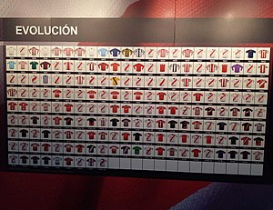
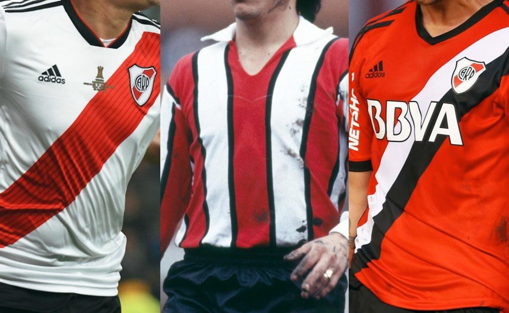

La camiseta de River Plate
La clásica camiseta tricolor comenzó a usarse en 1909 por pedido de algunos socios. La casaca ofició de camiseta titular del Club hasta 1931 inclusive.
En 1932, River vuelve a usar la tradicional camiseta con la banda roja. A partir de ahí, la tricolor pasó a ser la suplente. A veces en forma de camisa y otras veces en forma de remera atada arriba con cordones.
Fue en 1984 cuando dejó de usarse; en 1999, adidas decidió diseñar una nueva versión. Desde esa fecha y hasta la actualidad, se realizaron varios modelos de la camiseta tricolor. Las de 2002 y 2005 fueron algunas de las más famosas. La última vez que se usó fue en 2012.
Esta camiseta fue utilizada en momentos memorables y por jugadores que marcaron la historia de esta Institución. Por ejemplo, en 1932, cuando el Club logró su primer título oficial del profesionalismo. También con la consagración del tricampeonato de 1955 a 1957. Los siete campeonatos ganados con Ángel Labruna (de 1975 a 1981). Además, la famosa máquina integrada por Muñoz, Moreno, Pedernera, Labruna y Loustau (que para muchos fue la mejor delantera de la historia del fútbol argentino) también disputó varios partidos con la querida tricolor.
Varios jugadores que fueron símbolos de la Institución y del fútbol argentino vistieron con honor la casaca blanca, roja y negra: Enrique Omar Sívori, Ariel Ortega, Marcelo Gallardo y Fernando Cavenaghi son sólo algunos de ellos.
Actualmente, Adidas lanzó una nueva versión de la clásica camiseta tricolor.
 